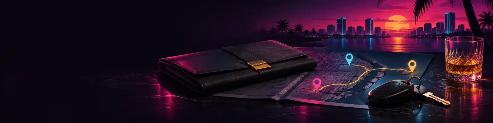

Her GTA 6 görevi: bir giriş ve 5 bölüm, 149 görev (119 ana, 30 isteğe bağlı), Strangers & Freaks ve hikaye uzunluğu (60-80 saat).

GTA 6 hikayesinde bir önsöz ve 5 bölüm vardır: Toplamda 149 görev, 119 ana görev (önsözde 1, ardından bölüm başına 25, 18, 31, 34 ve 10) ve 30 isteğe bağlı (kaynaklar: PowerPyx ve GTA Base; henüz çapraz kontrolden geçmeyen 23 başlık "onaylanacak" olarak işaretlenmiştir). 60-80 saat bekleyin. Görev madalyası ve görev tekrarı yok: her bölümün başında ve sonunda manuel kayıt bulundurun.
| Bölüm | Ana | İsteğe bağlı |
|---|---|---|
| Giriş | 1 | 0 |
| Bölüm 1 | 25 | 9 |
| Bölüm 2 | 18 | 9 |
| Bölüm 3 | 31 | 7 |
| Bölüm 4 | 34 | 5 |
| Bölüm 5 | 10 | 0 |
| Toplam | 119 | 30 |
| Toplam (ana + isteğe bağlı) | 149 | |
Kaynaklar : powerpyx.com · gtabase.com
Yedi karakterin görevlerine bağlı bir kupası var. Son görevlerini bitirmek, bu görevin kilidini açar.
Kupa : Road to Rehabilitation
Kupa : This Was No Boat Accident
Kupa : The Lone Rider
Kupa : Supply & Demand
Kupa : Spin On This!
Kupa : Fair Game
Kupa : Baited My Tackle
8 özel Strangers & Freaks görev serisini (gümüş kupa) tamamlamanız gerekir: Kirk, Kyle, Yago ve Pilot Pete sayısı; Shirley, Billy, Andy, Yasmani, Tyrone ve Eddie Acosta bunu yapmıyor. Hikayeden sonra hepsi mevcut kalır.
Bölüm başına tam görev listesi (ekrandaki başlıklar, konu özeti yok). "Kaçırılabilir" olarak işaretlenen isteğe bağlı görevler, çok fazla ilerlemeniz durumunda kaybolur.
Kupa : Just Like Paradise
Kupa : Trust
Kupa : Break the Bank
Kupa : Family Matters
Kupa : DWNFALL
Kupa : Hi-Jacked
Kupa : Snow Storm
Uç : Kovalamaca sırasında bir kaçış arayarak zaman kaybetmeyin, senaryoda yazılmıştır.
Uç : Dürbün aynı zamanda hayvanları da inceler: 255 türden 100'ü %100 sayılır. Zombix şifa ürünüdür (en fazla 5 adet, marketlerde satılır).
Ödül : 100 $ à 220 $ denizde
Ödül : Bir silah uzun süre au choix
Uç : Henüz bir banka hesabı olmadığından 600 dolar daha sonra Jason posta kutusuna gelir. Çitler uyuşturucu, mücevher ve işaretli banknotlar satın alıyor. Kapı kodları: Moonstone Butik'in arka odası 0420, Brian 's Lockup 7700.
Ödül : 600$
Uç : Ganado mahvolursa manuel olarak kaydedin ve yeniden yükleyin: evin dışında yeniden doğar. 1. Bölüm boyunca kişisel arabanız olarak kalacak.
Ödül : Ücretsiz motor ve onarım onarımı
Uç : Arkadaki asansör tavana çıkıyor ve WAiNK ile arabaları taramak için kullanışlı (%100 için 277'den 200'ü). Korumaları devirmek polisi alarma geçirir.
Ödül : 150$ + polis telsizi tarayıcısı
Uç : Macizo Puro'yu almak için dışarı çıkarken sokaktaki puro kutusunu alın.
Ödül : Sigara Macizo
Uç : Her iki Shirley görevi de yalnızca Bölüm 1'dir ve Turist Tuzağı başladığında kaybolur. Kupa veya %100 için ikisine de gerek yok.
Ödül : Hausse de la concentration et du rang de criminel pro
Uç : Yalnızca Bölüm 1, Turist Tuzağı başladığında kaybolur.
Uç : Gösteri atlamaları haritada işaretli kalır (Keşif filtresi).
Seçenek : Arnold'u Öldür: Sertleştirilmiş ceza puanı. Bırakın gitsin: kısıtlı ceza puanı. Her iki durumda da Arnold başka bir sonuçla karşılaşmadan oyundan ayrılır.
Ödül : 1.200$
Uç : Balıklara yakın yüzmek onları inceler ve 100 hayvanı %100 olarak sayar.
Seçenek : Köpekbalığını iki kez vurun: Dobbs yaşıyor. Ateş etmeyin: Dobbs yenir. Yalnızca son ara sahne diyaloğu farklıdır, başka sonuç yoktur.
Ödül : 400 dolar
Ödül : Konsol JoySystem'in bloke edilmesi
Ödül : Lucia ile İlişkinin Hausse'si
Uç : Satıcı seçiminize yorum yapıyor: güllerle gidin.
Seçenek : Buket veya gül: Görev üzerinde hiçbir etkisi yoktur.
Ödül : Lucia ile İlişkinin Hausse'si
Uç : Buna değer: Bölüm 2'de Lucia kolyeyi teminat olarak sunabilir, bu da daha sonraki görevi kolaylaştırır.
Ödül : Lucia ile İlişkinin Hausse'si
Uç : Kıyafetlerin aksine saç stilleri açık kalmaz; eski bir görünüme geri dönmek yine paraya mal olur.
Ödül : Lucia ile İlişkinin Hausse'si
Uç : Çantayı Lucia serbest bırakılıncaya kadar (Eve Dönüş) bagajda tutun ve kaybetmemek için dikkatli sürün.
Ödül : Lucia ile İlişkinin Hausse'si
Uç : Tüm ayak işleri yapılırsa ilişki 4 kalpten 3'ünde başlar ( Jason ve Lucia menüsü).
Seçenek : Cal'e flört uygulaması veya Donnie'nin kokain teklifi konusunda yardım etmek: hiçbir sonucu yok.
Ödül : 600 $ (ayetler artı geç dans la boîte aux lettres)
Uç : Aile Birikimleri hiçbir zaman geri alınamaz veya kaybedilemez. 1.000 doların üzerindeki satın alımlar BuckMe'den geçiyor ve cep harçlığı vefat durumunda kayboluyor: ATM'lere düzenli olarak para yatırın.
Ödül : BuckMe'yi Uygulayın (banka hesabı yapın)
Uç : Kaçakçıları öldürmek veya etkisiz hale getirmek her ikisi de işe yarar, yalnızca itibar farklıdır. Sonu meditasyonun kilidini açar (18 noktadan ilki).
Ödül : Donnie'ye kalan kokain karşılığında $500, +800 $
Uç : Cep harçlığı ölümle kaybedilir; hiçbir şey size ait olmadığında, satın alma işlemleri doğrudan BuckMe üzerinden gerçekleşir.
Uç : Tasarruflarınız ne olursa olsun, Bölüm 4'ün başında BuckMe Premium'a (Siyah) otomatik olarak yükseltileceksiniz. Kaydedilen para kilitlidir ancak asla kaybedilemez.
Ödül : Doğrudan ücretlendirme: bir geri dönüşten geri dönmek
Uç : Lucia Jason jet skiye binmesine izin vermek ilişkilerini geliştirir.
Seçenek : Mattia'nın elini sıkmak ya da sıkmamak hiçbir şeyi değiştirmez.
Uç : Çağrı her zaman gelmez ve 4 kalpten 3'ünde ilişkiye ihtiyaç duyulabilir.
Seçenek : Çağrıyı kabul etmek görevi başlatır; düşüş bunu atlar.
Ödül : Lucia ile İlişkinin Hausse'si
Uç : Cesetleri yağmalayın: Pompalı tüfeğiniz yoksa Shrewsbury Hobo'yu alabilirsiniz. Park edilmiş bisikletler iyi WAiNK taramalarıdır.
Ödül : 1.400$
Ödül : Nouvelle table basse la maison de Jason için
Uç : Düşman ateşi sonunda motorunuzu durdurur ve kontrol noktasının yeniden başlatılmasına neden olur.
Seçenek : Evde Lucia Brian emekliliğini anlatmak ilişkiyi iyileştirir; susmak hiçbir şey kazandırmaz.
Ödül : 1000$
Uç : Donnie'nin H&L .38'i (benzersiz silah) bagajda: arabayı almadan yok edin ve kaybolsun. Donnie'nin havacı güneş gözlükleri de kaçırılabilir bir kilit açma özelliğidir.
Ödül : 200 $, Donnie'den H&L .38, Donnie'nin ay pilotu
Ödül : 1.200 $ ( Brian intikam alırsanız)
Uç : Bölüm 1'in geri dönüşü olmayan noktası: Daha önceki manuel kaydetmeyi ayrı bir yuvada tutun ve Aile Tasarruflarına en az 5.000 ABD Doları yatırın. Bundan sonra serbest dolaşım yok, Jason uzun süre yalnız bırakıyorsunuz, tüm harçlığınızı ve Key Lento'nun evini kaybediyorsunuz.
Ödül : Peche Eğitimi
Uç : Yan içerik (Kenton'ın dalışları, Cal'in balık tutması, Yalıçapkını'nın saklandığı yerler) daha sonra geri dönecek. Burada polisi öldürmek suçlu profiline zarar vermez.
Uç : Andy'yi arayın ve fark edilmeden arabasına ulaşın: Lucia Andy'nin Ceketinin kilidini açar, aksi takdirde kaçırılabilir.
Ödül : Veste d'Andy
Uç : Bölüm 2 çoğunlukla Lucia olarak oynanır. Bölüm 1'i bitirdiğinizde kazandığınız Kayıp Cennet ödülü bu kısa görev sırasında açılır.
Ödül : Lucia özgürce neşeli; Trophee Kayıp Cennet
Uç : Bunu kaçıramazsınız: motele dönmek gerekiyor. Motel havuzunun yanındaki ağırlıklar ve kettlebell'ler Lucia gücünü geliştiriyor ve sağlık çıtasını yükseltiyor.
Ödül : Hausse de la ilişkisi
Uç : Kolyeyi, zamanlayıcının bitmesine izin verilse bile Lucia yine de kolyeyi teslim ediyor.
Seçenek : Bölüm 1'de satın alınan kolye buradaki borcu nakit olmadan kapatıyor.
Uç : Jason bu şekilde bakmak çiftin ilişkisini geliştirir.
Ödül : Hausse de la ilişkisi
Uç : Bittiğinde, 2. Bölüm açılıyor: bir araba çalın ve onu önce Musa'ya götürün, kendi aracınızı kullanmak çok yardımcı olur.
Seçenek : İki kez etkisiz hale getirin: profesyonel itibar ve kavga yok (önerilir). Provoke: Kolt'larla savaşın.
Ödül : BuckMe aracılığıyla Vicki'ye 50 $ geri ödeme
Uç : İsteğe bağlı görevler pembe harflerle siyah simgelerle gösterilir; %100 için 100 gereklidir. En ucuz yeni silah ise 495 dolardan Scorpio Nipper .38'dir.
Ödül : Bir silah au choix
Uç : Ucuz arabalar: izleyici yok; orta menzil: polisi uyaran standart izci; süper arabalar: Key Cloner'a ihtiyaç duyan gelişmiş izci (Bölüm 3). Daha sonra takip edilmeyen çalıntı arabaları Musa'ya satın; Bölüm 2'deki en hızlı erken para. Otoparkların arka tarafındaki yalnız arabaları seçin.
Ödül : Slim Jim, Scooter Bros'a başvuruyor, araç personeli ücretsiz olarak kayıt yaptırıyor, Musa'ya seyahat ediyor
Uç : 150$ civarında getir. Lucia saçları yeterince uzunsa Dalgalı Topuz'u evde ayna karşısında kendisi de yapabilir.
Uç : Mankenin üzerindeki Bargain World Ensemble 46 dolarla en ucuzu.
Uç : Starlet Motel'in çevresinde üç kedi yaşıyor: Odaklanma desteği ve Profesyonel profil puanları için onları övün, ardından evcilleştirin ve besleyin.
Ödül : Déverrouille Slam Dunk
Uç : Önceden tasarruf edin: hızlı hareket eder.
Uç : Geniş bir daire çizin ve elektriği keserek sorunsuz bir şekilde inin.
Ödül : 400 dolar
Uç : Linda'yı hemen görürseniz kira 900 dolar, ilk önce market alışverişine çıkıp o odaya gelirse 1.080 dolar.
Ödül : Collier de Lucia Rendu
Uç : Fazladan 1000 dolar karşılığında Bill'in cesedini yağmalayın. Dunk bir çit haline gelir ve ertesi gün haritada iki soygun yerini işaretler.
Ödül : BuckMe kredisi aracılığıyla 1.700 $ Dunk
Uç : 5.000 dolar ödemek israftır: çalın ya da pazarlık yapın. Çiftlikte mutasyona uğramış bir çilek yiyebilirsiniz.
Seçenek : Çalın (ateş etme, 2 yıldız), 3.000 $ ödeyin veya uçak teminatı yoluyla bedava: görev için aynı sonuç.
Ödül : 1000$
Uç : Kısa süre sonra Moses size Port Gellhorn Garajını hediye ediyor ve daha fazla garaj satın almak için Vice City Real Estate uygulamasının kilidini açıyor.
Ödül : Sadece 1 750 $ (1 250 $ + 500 $ ve bonétat), Port Gellhorn garajı, Vice City Real Estate başvurusu
Uç : Bu görev, Trust ödülünün kilidini açar ve Jason yeniden oynanabilir hale getirir.
Ödül : Argent des braquages, trophée Trust, Jason ve Lucia için araç personeli, personel değişikliği
Uç : Herhangi bir sırayla dört iş açık: Thrillbillies, Hit Avery Pawn, Hit Kingpin Bowling, El Konulan Araç. BuckMe, Silver'a yükseltilir (100.000 $ limit, RydeMe'de %20 indirim); İlk 5.000 $ tasarruf hedefine ulaşırsanız 2.000 $ faiz.
Ödül : Ücretsiz Jason / Lucia , BuckMe Silver, 2 000 $'lık olası uluslararası ücret değişikliği
Uç : Sanchez'in maliyeti daha yüksek ancak daha iyi bir sonuç, kira bedelini geri ödüyor.
Ödül : Sadece 2 500 $ tek yer (çevre 625 $ 3e için)
Uç : Highwayman Sanchez, off-road akrobasi atlayışları için mükemmeldir: onu bir garaja park edin ve saklaması için Moses'ın dükkanına kaydedin.
Ödül : 2.000$
Ödül : Argent selon le butin
Uç : Kupa kaçırılmaz: Değerli bir kupayı kaçırırsanız bowling salonu oyun içinde birkaç hafta sonra yeniden canlanır (Bölüm 3).
Ödül : Gutterball Moreland 850, montre de luxe, argent du kahve ve butin
Uç : El koyma eğitimi: Bir suça el konulduktan sonra polis arama alanına bırakılan kişisel bir araç. Daha sonra Scooter Bros uygulamasıyla (ücretli veya premium katmanda ücretsiz) geri alın.
Ödül : Lucia kurtarıcı araç personeli
Uç : Öldüğünüzde kaybetmemek için BuckMe'ye nakit para yatırın.
Uç : Kalbe veya kafaya yapılan bir atış, karkasın bozulmamış kalmasını sağlar; çoklu çekimler kaliteyi düşürür. 255 hayvandan 100'ünün incelenmesi %100 sayılır.
Ödül : BuckMe aracılığıyla 500 $ Bret, Killtelligence SM-69 ile
Kısmi izlenecek yol, iki kaynak aynı fikirde olduğunda tamamlanır.
Uç : Güvenli kod 2008'dir. Jason dans etmezse bisikletçiler daha çok kovalar.
Seçenek : Yardım: Jason sahnede dans ediyor, ekstra sahneler ve sonrasında kıyafet satın alma adımı. Yardım etmeyin: dansçılar ayrılır, Jason tavana ateş eder ve soygun bir anda, daha hızlı başlar. Nihai sonuç aynıdır.
Ödül : BuckMe aracılığıyla 10.000 $ Vicki ödünç
Uç : Bisiklet kovalamacası sırasında ölürseniz, bir hata Jason hedeften çıkarabilir: görevi yeniden başlatın. Lucia olmadan ayrılmak ilişkiye zarar verir.
Seçenek : Lucia olmadan kaçmak mümkündür ancak ilişkilerine zarar verir.
Seçenek : Dansçılar için Dre'Quan parasını kabul edebilir veya reddedebilirsiniz; hiçbir sonuç belgelenmemiştir.
Ödül : Appartement Bayside (201), Pay 'n' Sprey'e erişim
Uç : Alıcıya kontrol ederken acele etmesini söyle. Şiddete başvurmadan çözmek Profesyonel bir bonus kazandırır.
Seçenek : Kesilen ürün: tespit edildi ancak yarı fiyatına satılabilir. Saf: sorun değil. Seçimin sonradan etkisi yoktur.
Uç : Arka merdivenleri, alt çatıyı ve klimanın üzerindeki pencereyi kullanın. Bacağını hedeflemek için Odak'ı kullanın.
Seçenek : Halifax'a heykeli vererek saatini kazanır. Reddetmek bir çağrı hedefi ekler: 2. ve 3. blokları asla aramamak. Motelde ona güvenmek 3. bölümün kilidini açar.
Ödül : Montre (parti 1), çevre 2 500 $ en bijoux ve argent + une '32 Hustler (partie 3)
Uç : Arabaları yakalayıp parçalamak için ekskavatör pençesini kullanın.
Uç : En pahalı araba en iyi istatistiklere sahiptir ve kazanmayı kolaylaştırır.
Ödül : 3 000 $ 1. sıraya dökün (sınıflara göre değişir)
Kısmi izlenecek yol, iki kaynak aynı fikirde olduğunda tamamlanır.
Uç : Serserileri ateş etmek yerine yakın dövüşle bayıltın.
Seçenek : Rüşvet veya hırsızlık: sonuç aynı, sadece yöntem farklı.
Ödül : Tyrone sapkın iletişim de livraison (Marchandises)
Uç : Kovalamaca sırasında hırsızlar çıkmaz bir sokağın etrafında dönerler ve bu da onların vurulmasını kolaylaştırır.
Ödül : Yasmani sapkın iletişim de livraison (bijoux, kütük marqués mieux payés)
Uç : Kyle'ın cesedini almaya çalışmayın; bu sizi öldürür.
Seçenek : Bitiş 1: ödül yok, Kyle ortadan kayboluyor. Bitiş 2: 5.000$.
Ödül : 5 000 $ (son 2)
Kısmi izlenecek yol, iki kaynak aynı fikirde olduğunda tamamlanır.
Uç : Diğer SCOOP kaplarında ise bir puro ve 600 dolar bulunuyor. Otoyol kaçışı sırasında çarpmaktan kaçının.
Seçenek : Brian purosunu kabul etmenin veya reddetmenin bilinen bir sonucu yoktur; Surf ve Turf'u sipariş etmek küçük bir ilişki bonusu verir.
Ödül : İçeriğin tümünü boşaltın SCOOP
Uç : Casa de Empeño, arka kapısı olmayan en küçüğüdür: iyi bir ilk hedef. Kasa kodları: 1680 (Casa de Empeño), 6815 (Richardson), 0104 (Donovan Banks). Richardson ve Donovan'da kasadan sonra çıkabilir veya daha fazla para almak için vitrinleri temizleyebilirsiniz.
Ödül : 20 000 $ + Snap Gun, Yasmani garajına erişim
Uç : Polis yarıştan sonra sizi kovalar: arama alanından kaçın.
Ödül : 500 $
Kısmi izlenecek yol, iki kaynak aynı fikirde olduğunda tamamlanır.
Uç : Metal çatıya ulaşmak için beyaz minibüse tırmanın. Yakındaki bir sandıkta susturuculu bir tabanca ve flaş bombaları bulunuyor.
Seçenek : Saldırmayan bir köpeği vurmak cezai bir ceza verir; Silah sesleri çete üyelerini çekiyor.
Ödül : 3 000 $, Randy araçla iletişime geçsin
Uç : Eve arka kapıdan girin.
Uç : Waxman Adası garaj kodu: 2404. Yarı yükseltilmiş köprüden atlamak polisleri gölgede bırakıyor. Jason gücü azalırsa envanterden iyileş.
Seçenek : Lastiklere ve motorlara (veya memurların bacaklarına) nişan almak Profesyonel/Sertleştirilmiş derecesini korur; sürücüleri öldürmek Şiddete yol açar.
Ödül : 3 000 $
Uç : Helikopter pilotunu ön camdan vurun. Teknede arka koltuklarda saldırı tüfekleri ve vücut zırhları bulunmaktadır. Lucia ilk başta treni kaçırır; bir sonraki istasyona doğru koşar.
Ödül : 3 000 $
Uç : Muhafızları hızla tehdit edin; Eğer çekerlerse, Profesyonel derecesini korumak için silahı uzağa ateş edin veya dizlere nişan alın. Tek bir çanta yağmayı hızlandırır.
Seçenek : Aralarından seçim yapabileceğiniz iki maske çifti; sonradan bilinen bir etkisi yoktur.
Ödül : 6 000 $ + Boya Paketi Karıştırıcı
Uç : Çubuk pembeye döndüğünde çubuğu belirtilen yönde itin. Takipçinin polisi uyarmaması için hızınızı artırın; Arabayı hasarsız teslim etmek bir bonus kazandırır.
Ödül : 21 250 $ + 10 000 $ ve canlı olarak yaşamak, Anahtar Klonlayıcı
Uç : Arabanın yerini bulmak için kornaya basın. Takipçileri kaybetmek için kırmızı harita alanını bırakın.
Seçenek : Spor ayakkabı: 1.580 $ ödeyin veya satıcıya basketbol topu atarak ücretsiz alın. Ayakkabıları fedaiye göstermek seni bedavaya getirir.
Uç : Mesaj gelir gelmez gidin: görevin süresi sınırlıdır.
Ödül : Sadece 3 800 $ 1. sırayı almak için
Uç : Denetleyin: Tezgahın üzerindeki kameralar, pembe takım elbiseli adam, asansörlerin yanında iki koruma, güvenlik paneli.
Uç : Gardiyanların fark etmemesi için Nicole'u taşırken Jason hemen arkasında kalın.
Uç : Odaklanma (L3+R3), bacaklara hızlı bir şekilde nişan almanızı sağlar.
Uç : Yalnızca arkanızda hiçbir araç olmadığında yeniden yükleyin. Tüm kargoları muhafaza etmek Profesyonel bir bonus kazandırır.
Seçenek : Kaydedilen kargo, Gizli Yüklerdeki patlayıcı sayısını belirler: kamyona çarpan her araç size bir miktar maliyet getirir.
Ödül : Patlayıcılar Gizli Yükler döküyor
Uç : Psycho derecesinden kaçınmak için bisikletçilere ve mezar taşlarına kasayla çarpmaktan kaçının.
Seçenek : Çekime katılmak (Rodney'in kavgası) Lucia üzüyor; düşürülmesi tavsiye edilir.
Ödül : 1 500 $ + Kalinga 0,50 Gil
Uç : İlk cinayetten sonra Monty'nin tabancasını almak için fotoğraf odasına geri dönün. Profesyonel bonusu korumak için sorgulama sırasında onu öldürmeyin.
Seçenek : Onu tamamen suya indirmek onu öldürür ve Profesyonel bonusunu kaybeder.
Ödül : Monty Tabancası (1992 modeli)
Uç : İyi silahlanmış olarak gelin, Billy'ye yakın durun ve kaza yapmaktan kaçının. Yalnızca solo.
Seçenek : Kasayı patlayıcılarla havaya uçurun veya personeli tehdit ederek Billy'nin kodu almasını bekleyin.
Ödül : 12 000 $
Kısmi izlenecek yol, iki kaynak aynı fikirde olduğunda tamamlanır.
Uç : Silah ilerlemesi için çatışmada düşman silahlarını yağmalayın.
Seçenek : Yago'yu kurtarın ya da bırakın; her iki durumda da ölür.
Ödül : Voiture de Yago
Kısmi izlenecek yol, iki kaynak aynı fikirde olduğunda tamamlanır.
Uç : Gaz pedalını basılı tutun ve sürüklenmeye yönlendirin; boyamadan önce sprey kutusunu çalkalayın. Takipçileri kaybetmek için kırmızı bölgeyi terk edene kadar sürün.
Ödül : Batte de Bae-Luxe (varyant)
Uç : Önce doğu kulesini dikin. Görevleri Jason ve Lucia arasında bölmek işleri hızlandırır; her suçlama son soyguna zaman katar.
Seçenek : Şirket Mülkünde kaybedilen kargo sandığı başına bir adet hariç en fazla üç şarj.
Ödül : The Cartel Heist için ek sıcaklıklar
Uç : Polisin uzun silahlarını alın; ışıkları karanlık üçüncü kata yardımcı oluyor. Bir helikopter sizi takip ediyor: arama alanının dışında kalın.
Seçenek : Kırmızı bölgeye park etmek, araca el konulmasına neden olur. Boobie kırmızı çantasını almak (ilk odadan ayrılmadan önce) Profesyonel bir bonus kazandırır.
Ödül : 3 500 $ ( Boobie ilk gününde)
Uç : Yalnızca bir tabancayla başlarsınız: düşman silahlarını alın.
Ödül : 2 000 $ de Mia, vesés plusieurs jours en jeu plus tard
Uç : Kasadaki büyük banknot yığınlarına öncelik verin. Odaklanma, helikopter pilotunu vurmanıza yardımcı olur.
Seçenek : Silahları gardiyanları öldürmek yerine ellerinden çıkarmak, Profesyonel derecelendirmenin korunmasına yardımcı olur.
Ödül : 120 000 $, ödül Bankayı Kırmak
Uç : Vale arabanızı alır, o yüzden içeri girin. Gardıropta yeni kıyafetler var.
Ödül : Chambre 701 du Y Otel
Uç : Önce masanın üzerindeki telefonu alın.
Ödül : BuckMe Black'i satın alın (plaka 2 000 000 $)
Seçenek : Eddie'nin davetini kabul etmek veya reddetmek, isteğe bağlı 'Eddie Acosta'nın Partisine Katılın' görevinin her iki durumda da görünmesini sağlar.
Uç : Pfister Comet S2 en iyi temel hıza sahiptir; Lucia için bir kamyon veya SUV daha dengelidir. Koleksiyon için arabaları WAiNK uygulamasıyla tarayın.
Seçenek : Her iki araba da yükseltmeniz veya satmanız için sizin olur; hasar önemli değil.
Ödül : Deux voitures haut de gamme
Seçenek : Abe Lucia Jason bırakmasını önerir; reddediyor.
Uç : Susturuculu tabancanın yedek cephanesi yok: Focus ile siperden ateş edin ve merdiven boşluğunda çömelerek yürüyün. Tespit edilmek tüm katı uyarır ve rehineleri tehlikeye atar.
Uç : Araba bir binaya girdiğinde Lucia geçmek için sağı basılı tutun. Takibe katılan arabalara karşılık verin.
Ödül : 6 000 $ + W-10'un iki çeşidi ( Roxy ve Bae-Luxe )
Kısmi izlenecek yol, iki kaynak aynı fikirde olduğunda tamamlanır.
Seçenek : Onu öldürmek 20.000 dolar kazandırır (Andrea). Onu kurtarmak, isteğe bağlı 'Felipe'nin Hediyesini Topla' görevinin (aracını topla) kilidini açar.
Ödül : 20 000 $ ve Felipe Salı
Kısmi izlenecek yol, iki kaynak aynı fikirde olduğunda tamamlanır.
Uç : Eddie, Strangers & Freaks ödülüne dahil değil.
Seçenek : 50.000 $ ödemek size değersiz bir NFT imajı kazandırır. Onu reddetmek ya da vurmak paranızı elinizde tutar ama o sizi kurşun geçirmez bir kapının arkasına kilitler.
Ödül : Aucune
Kısmi izlenecek yol, iki kaynak aynı fikirde olduğunda tamamlanır.
Uç : Daha sonra Jason ve Lucia , VCIA Takedown'a kadar halk arasında birlikte görülemez; sadece Y Otel odasında takılabiliyorlar.
Seçenek : Nate, Lucia steroid teklif ediyor: reddetmek varsayılandır; kabul etmek oyunun geri kalanında fiziğini değiştirir.
Kısmi izlenecek yol, iki kaynak aynı fikirde olduğunda tamamlanır.
Uç : Polisi kaybettikten sonra araçları değiştirin ve kılık değiştirerek şapka ve gözlük alın. Otoyolda barikatlar sıklıkla yaşanıyor.
Ödül : Çevre 80 000 $ eğer ticari kütüklerden satın alırsanız
Kısmi izlenecek yol, iki kaynak aynı fikirde olduğunda tamamlanır.
Kaynaklar : PSNProfiles · PowerPyx · GTABase.